Como precio orientativo, un armario empotrado abatible completo sale entre 450 y 650 € por metro lineal, uno corredero entre 550 y 750 €/ml, y si solo cambias el frente, entre 250 y 400 €/ml, con IVA. Lo que más mueve la cifra es el tipo de puerta, si hace falta interior nuevo y cómo esté el hueco.
¿Qué precio tiene un armario empotrado por metro lineal?
En carpintería el armario empotrado se cobra por metro lineal: el ancho del hueco, de pared a pared. La altura y el fondo influyen, pero la referencia con la que vas a comparar presupuestos es el metro lineal.
Nuestros precios orientativos, con IVA, para Córdoba en 2026: armario abatible con puertas e interior, 450 – 650 €/ml; armario corredero, 550 – 750 €/ml; solo el frente (puertas y marco, aprovechando el interior que ya tienes), 250 – 400 €/ml. Son orientativos: el precio cerrado te lo damos cuando vemos tus fotos y tus medidas.
¿Abatible o corredero: cuál me conviene?
El abatible abre del todo: ves el armario entero de un vistazo y el herraje es sencillo. A cambio necesita espacio delante para que la puerta gire. En un dormitorio con la cama cerca del armario, eso molesta.
El corredero no ocupa sitio al abrir, así que encaja en pasillos y habitaciones justas. La contrapartida es que nunca ves todo el interior a la vez, porque una hoja siempre tapa a otra, y el sistema de guías pide un hueco razonablemente recto. Por eso suele costar algo más.
Regla práctica: si delante del armario puedes abrir una puerta sin chocar con nada, el abatible es más cómodo y más barato. Si no, corredero.
¿Me basta con cambiar solo el frente?
Muchas casas tienen armarios con un interior de obra o de tablero que sigue sano, pero con puertas viejas, desconchadas o que ya no cierran. Ahí cambiar solo el frente es la opción lógica: renuevas lo que se ve y pagas bastante menos que por un armario completo.
No compensa si el interior está hinchado por humedad, si las baldas ceden o si quieres redistribuirlo entero (cajoneras, doble barra, zapatero). En ese caso sale mejor hacerlo completo de una vez.
¿Qué hace que suba el precio?
Las cosas que más encarecen un armario empotrado son siempre las mismas: puertas correderas en lugar de abatibles, acabados de madera o lacados especiales frente a los estándar, interiores con muchos cajones y accesorios, y huecos torcidos o fuera de escuadra que obligan a ajustar cada pieza.
También cuenta la altura: un armario hasta el techo, con altillo, lleva más material y más puertas que uno que se queda a media altura.
¿Cómo mido el hueco para pedir precio?
Con un metro y el móvil te basta. Mide el ancho abajo, en medio y arriba; el alto a la izquierda, en el centro y a la derecha; y el fondo, de la pared del fondo al borde del hueco. Apunta siempre la medida más pequeña de cada tanda, que es la que manda.
Haz una foto de frente al hueco entero y otra de cerca de cada esquina. Si hay enchufes, interruptores, rodapié o un radiador cerca, que salgan en la foto.
¿Cómo funciona el presupuesto con Maderas Yeadel?
Nos mandas fotos y medidas y te damos precio antes de que nadie pise tu casa. Un armario empotrado es un trabajo a medida, así que antes de fabricar hacemos una visita de medición: su coste te lo decimos antes y, si nos encargas el armario, te lo descontamos.
Tras la medición, la fabricación lleva de 2 a 4 semanas y el montaje en casa, de 1 a 2 días.
Servicio relacionado: Armarios empotrados.
Lo que nos preguntan.
¿Los precios del armario empotrado incluyen IVA?
Sí. Los rangos por metro lineal que ves en esta guía son orientativos, con IVA incluido, para Córdoba en 2026.
¿Cuánto tardáis en tener el armario montado?
Después de la visita de medición, la fabricación lleva de 2 a 4 semanas y la instalación, de 1 a 2 días.
¿La visita de medición se paga?
Sí, porque el armario se hace a medida. Te decimos lo que cuesta antes de ir y, si nos encargas el trabajo, te lo descontamos del total.
